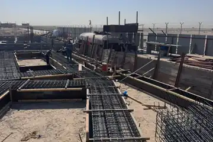

قبل عرض السعر
- مخططات معتمدة وتقرير التربة عند الحاجة
- جدول كميات ومواصفات يحددان حدود المسؤولية
- توضيح الأعمال غير المشمولة والافتراضات
شركة تعاود مقاول بناء عظم في الرياض للمشاريع السكنية والتجارية، بنطاق واضح ومتابعة لمراحل التنفيذ من البداية حتى تسليم الأعمال.
تبدأ أعمال البناء بفهم المخططات وحالة الموقع ونطاق التوريد والتنفيذ. ننسق المراحل والأعمال المرتبطة بها، مع مراجعة البنود قبل تغطيتها أو الانتقال إلى المرحلة التالية.
توضح دراسة مشروع المستودعات أعمال تعاود الإنشائية في المدينة الصناعية الثانية بالرياض: 8 مستودعات على مساحة إجمالية 29,122.40 م² خلال 6 أشهر. وتعرض الصور تجهيز القواعد وتركيب الهياكل المعدنية.


توضح مراحل المستودعات أهمية ترتيب أعمال القواعد والهيكل ومتابعة تقدم كل وحدة. وفي مشروع بناء فيلا، تُحدد نقاط الفحص وتسلسل العمل بحسب مخططات الفيلا ونطاقها الإنشائي.
راجع قائمة فحص جودة بناء العظم قبل الانتقال بين المراحلفي حديقة الملك سلمان بالرياض، شمل نطاق تعاود أعمال الحدادة والعزل لخزانات بمساحة 119 م² خلال أسبوعين، لمشروع شركة الراجحي للبناء والتعمير.
أرسل موقع المشروع ونوع المبنى والمساحة والمخططات المعمارية والإنشائية، وتقرير التربة وجدول الكميات عند توفرهما. وضّح أيضًا هل المطلوب تنفيذ العظم فقط أم استكمال مراحل لاحقة.
نقدم خدمة البناء والإنشاءات للمشاريع التي تحتاج إلى إدارة تنفيذ واضحة، بداية من فهم المتطلبات وحتى تنسيق الأعمال الأساسية وفق طبيعة المشروع.

مراجعة الموقع والمتطلبات الأساسية.
تنظيم البنود والمراحل المطلوبة.
متابعة الأعمال والتنسيق بين الفرق.
مراجعة الأعمال وتسليم المرحلة.
أدلة عملية تساعدك على فهم النطاق والتكلفة والعقد والجودة قبل طلب عرض التنفيذ.
العرض الأقوى ليس الأقل رقمًا فقط؛ بل الأكثر وضوحًا في المدخلات ونقاط الفحص وما سيتم تسليمه.
التنسيق المبكر يقلل التعارضات ويجعل القرارات وتسلسل التنفيذ أكثر وضوحًا.
مدخلات ونقاط تعاقد وفحص تساعد على ضبط نطاق البناء.
تساعد المخططات المعتمدة وتقرير التربة عند الحاجة وجدول الكميات والمواصفات وموقع المشروع على إعداد نطاق قابل للمقارنة.
يتحدد ذلك حسب نموذج التعاقد؛ ويجب أن يذكر العرض بوضوح التوريد والمصنعية والأعمال المستثناة ومسؤولية كل طرف.
تُحدد نقاط فحص قبل الصب أو الردم أو تغطية الأعمال، مع مراجعة المحاور والتسليح والشدات والفتحات وما يرتبط بالمخططات.
المساحة ونوع المبنى والتربة والنظام الإنشائي والمواصفات والكميات وحالة الموقع ونطاق التوريد والبرنامج الزمني.